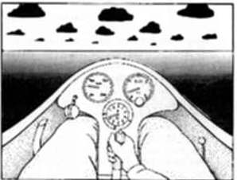
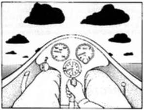
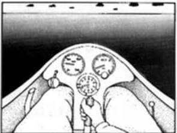
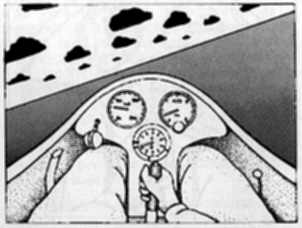
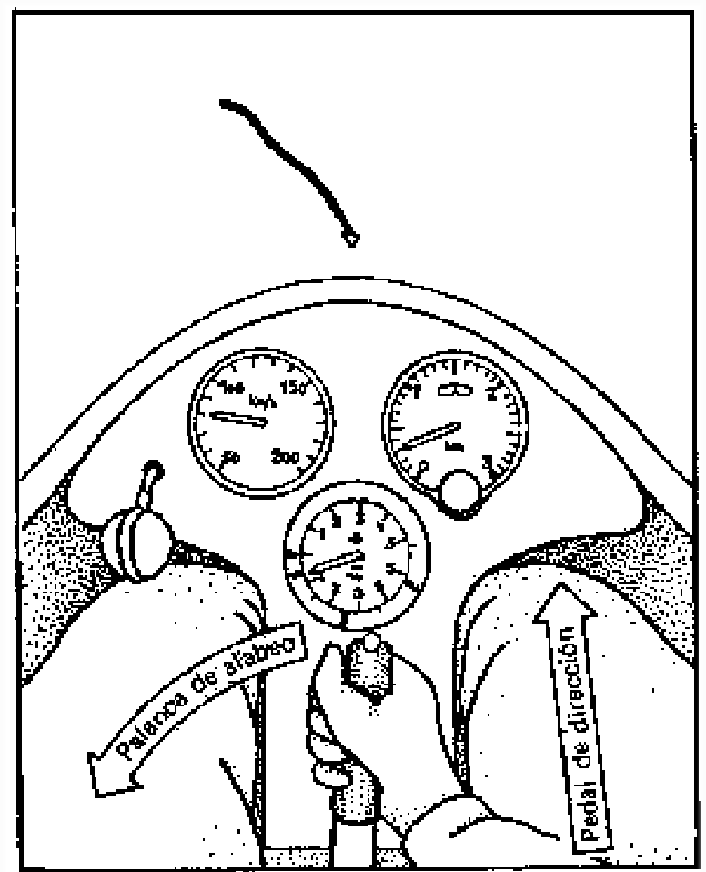
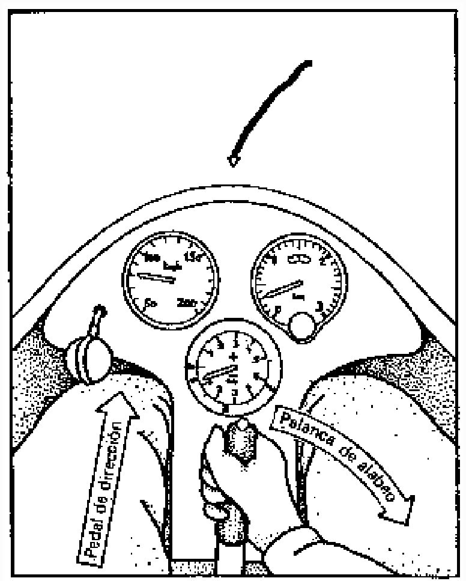

TÉCNICAS ELEMENTALES DE VUELO A VELA
José Ignacio Otero
|
1. VUELO RECTO Y NIVELADO |
|||
|
1.1 VELOCIDAD: |
|||
|
|
1.1.1 |
RELACIÓN BORDE CABINA - HORIZONTE |
|
|
1.1.2 |
VELOCÍMETRO |
||
1.2 ALAS NIVELADAS |
|||
1.3 RUMBO |
|||
1.4 LANITA CENTRADA |
|||
Para realizar esta maniobra se deben tener en cuenta los cuatro parámetros enumerados arriba:
1.1 VELOCIDAD:
El control de la velocidad se logra con el
timón de profundidad con cuya acción logramos la rotación del planeador sobre su
eje transversal. Si movilizamos la palanca hacia delante picamos el planeador,
acelerándolo, y lo opuesto, si movemos la palanca hacia atrás, lo cabreamos,
desacelerándolo. Para mantener el planeador en la velocidad deseada debemos
tener el cuenta dos parámetros que en orden de importancia son:
1.1.1
RELACIÓN BORDE CABINA – HORIZONTE:
La distancia entre el horizonte y el borde de la cabina nos permite establecer
cuan cabreado o picado se encuentra el planeador. Manteniendo esta distancia
estable logramos establecer una velocidad determinada, la cual cotejamos con el
segundo parámetro:
1.1.2
VELOCÍMETRO:
Es el instrumento que nos indica que velocidad corresponde a determinada
distancia entre el borde de la cabina y el horizonte. Debe tenerse en cuenta que
presenta retardos, y que habrá un lapso de tiempo entre la modificación de la
actitud del planeador y la indicación del instrumento, por lo que es muy
importante aprender a volar “afuera” con el horizonte, chequeando periódicamente
el instrumento.
El control de la velocidad es uno de los fundamentos del
vuelo, en realidad podemos ejemplificar diciendo que los pilotos somos
“administradores” de velocidades, colocando a la máquina en la actitud correcta
para obtener la velocidad adecuada para cada una de las diferentes maniobras que
transcurren durante un vuelo: planeos, virajes, acrobacia, circuitos de tráfico,
etc.






1.2 ALAS NIVELADAS: Con respecto al horizonte, o sea que el mismo no debe aparecer inclinado delante nuestro. Una pequeña inclinación del ala (o del horizonte) en uno o dos grados nos llevará inevitablemente a un viraje, y por lo tanto no podremos mantener el vuelo recto ni el rumbo. Las alas se mantienen niveladas mediante los alerones quienes hacen girar al planeador sobre su eje longitudinal (alabeo). Un error frecuente es mirar las puntas de las alas para intentar mantenerlas niveladas: Se debe mirar hacia delante focalizando la vista en unos 90º (45º a la derecha y 45º a la izquierda de la proa del planeador), prestando suma atención a las inclinaciones del horizonte que surjan, corrigiéndolas con los alerones. Las correcciones que se realicen con los alerones deben hacerse con movimientos transversales de la palanca, evitando moverla hacia delante o atrás para no modificar la velocidad.
1.3 RUMBO: La mejor forma de establecerlo es fijar un punto en el horizonte: puede ser un galpón, silo, camino, pista, etc.. Los primeros planeos rectos y nivelados se harán en contra o a favor del viento para evitar la deriva. Si las alas se encuentran correctamente niveladas cualquier salida del rumbo se deberá al mal uso del timón de dirección (pedales). El timón de dirección hace girar al planeador sobre su eje vertical (guiñada).
1.4 LANITA CENTRADA: Si el planeador se encuentra en un vuelo recto con las alas niveladas y con un uso coordinado de los alerones con el timón de dirección, la lanita se encontrará centrada. Si la lanita se encuentra desplazada hacia uno de los lados y las alas están correctamente niveladas, la corrección deberá hacerse accionando el pedal del lado contrario al que se desplazó la lanita, o sea lo inverso de la corrección de la bolita, la cual se “pisa”. Aprender a volar con lanita y bolita centrada hará que los planeos que Ud. realice en el futuro sean con la menor resistencia al avance, obteniendo de este modo las mejores prestaciones del planeador que vuele. La lanita es mucho mas “sensible” que la bolita, y tiene la ventaja adicional que nos queda en el horizonte, que es donde nosotros cotejamos permanentemente la actitud de vuelo de nuestra máquina.
Por último, recuerde volar “afuera y adelante”, donde podrá evaluar la relación borde cabina – horizonte (velocidad), el grado de inclinación del horizonte (alas niveladas), la dirección en que se desplaza (rumbo) y la coordinación de los mandos (lanita centrada). Volver Arriba
|
2. VIRAJES |
|||
|
2.1 VELOCIDAD: |
|||
|
2.1.1 |
RELACIÓN BORDE CABINA - HORIZONTE |
||
|
2.1.2 |
VELOCÍMETRO |
||
2.2 ALAS INCLINADAS |
|||
2.3 LANITA CENTRADA |
|||
Para realizar virajes debemos tener en cuenta los tres parámetros enumerados arriba:
2.1 VELOCIDAD: Al igual que en el vuelo recto y nivelado, el control de velocidad se realiza mediante la relación borde cabina – horizonte y el velocímetro. Es muy importante tener en cuenta no variar la relación borde cabina – horizonte tanto al comenzar como al salir del viraje, o sea no levantar la proa (cabrear) ni bajarla (picar) cuando se comienza a usar los alerones para virar o para volver a recto y nivelado.
2.2 ALAS INCLINADAS: Con respecto al horizonte. En los primeros virajes no debe superarse los 30 grados de inclinación. Una vez establecida la inclinación debe mantenerse en forma constante, o sea que si nos proponemos 20 º por ejemplo, debemos mantener durante todo el viraje los 20º de inclinación haciendo uso del mando de alabeo (alerones). No hacer esto nos llevará a un viraje “facetado” y no a un viraje redondo. El error mas frecuente surge de mantener accionado el alerón de adentro del viraje, con lo que el planeador continúa “hundiendo” el ala, escarpándose en demasía y acelerándose; para evitar esto, una vez que obtenga el grado de inclinación deseada, deje de accionar el alerón interno del viraje, lleve la palanca al medio y, si es necesario, aplique alerón contrario para mantener el grado de inclinación deseado. Otra causa de error es mirar la punta del ala para evaluar el grado de inclinación, no lo haga, siempre mire hacia delante donde podrá cotejar cuanto se ha inclinado el horizonte manteniendo la relación borde cabina – horizonte (velocidad) adecuada.




2.3 LANITA CENTRADA: SIEMPRE que inicie un viraje accione
simultáneamente el alerón y el pedal del lado interno del viraje mirando hacia
delante la lanita, a la que mantendremos centrada durante la transición de recto
y nivelado a viraje, ejerciendo la presión adecuada sobre el pedal que
corresponda. Mirando hacia delante podremos además controlar el grado de
inclinación y la relación borde cabina – horizonte (velocidad). Los errores mas
frecuentes son:
2.3.1 DERRAPE (con lanita hacia adentro) por aplicar mas pedal que alerón, el cual se corrige accionando pedal contrario o alerón del mismo lado hasta llevar la lanita al medio.
2.3.2 DESLIZAMIENTO (con lanita hacia afuera) por aplicar mas alerón que pedal, el cual también se corrige accionando pedal contrario o alerón del mismo lado hasta llevar la lanita al medio.
Si las desviaciones de la lanita son muy marcadas también pueden ser corregidas por la acción simultanea de ambas maniobras correctivas, o sea un poco de pedal contrario y un poco de alerón del mismo lado de la inclinación de la lanita.
Es muy importante acostumbrarse a iniciar, mantener y salir de los virajes con la lanita centrada, y una vez que con el tiempo se logren estos virajes coordinados podremos razonar con cual de las maniobras correctivas (alerón o pedal) lograremos la actitud o la posición deseada para el planeador: Por ejemplo, si durante un viraje en una térmica la lanita se nos desplaza hacia adentro, y nosotros sabemos que el núcleo de la térmica también se encuentra hacia adentro del viraje, podemos razonar que si aplicamos el pedal externo para llevar la lanita al medio nos alejaremos del núcleo, por lo que en este caso nos conviene usar como corrección accionar el alerón del mismo lado y centrar de este modo la térmica en su máximo ascenso.




Tanto el derrape como el deslizamiento implican un importante aumento de la resistencia al avance en desmedro de la sustentación, que en el caso del vuelo a vela pueden significar la diferencia entre un vuelo exitoso o frustrante, dado que aprovechar al máximo el ascenso brindado por las térmicas, sobre todo si son débiles, puede ser totalmente imposibilitado por la ocurrencia de estos errores de coordinación en los virajes.
Por último, recuerde volar
“afuera y adelante”, de este modo podrá evaluar la relación borde cabina –
horizonte (velocidad), el grado de inclinación de alas, manteniéndolo y evitando
los virajes “facetados” (alas inclinadas), y evitar los derrapes y
deslizamientos (lanita centrada). No olvide que SIEMPRE se entra y se SALE de
los virajes con accionamiento simultáneo de alerón y pedal manteniendo la lanita
centrada; si Ud. logra hacer de esto un reflejo condicionado se alejará de
situaciones de riesgo, como por ejemplo derrapes, deslizamientos, pérdidas o
entradas en tirabuzón sin posibilidad de recuperación en entradas y salidas de
virajes no coordinados a baja altura.
Volver Arriba